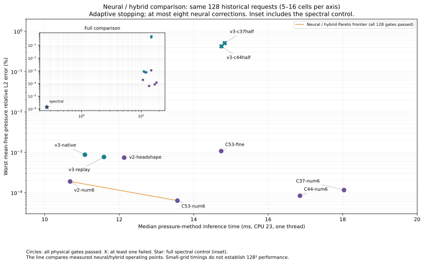
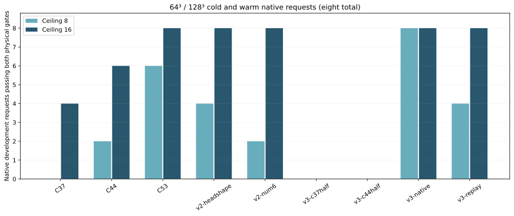

The native 64³/128³ fit passed all eight reserved blind pressure requests using at most five CNN corrections. On the four-step 128³ coupled scene, median fluid-step time fell from 21.43 s for the previous learned method to 11.43 s; spectral pressure remained faster at 3.37 s. The new fit did not improve the historical small-grid accuracy/speed frontier.
Both genuinely reduced-width fits failed the native pressure gates. That result applies to this pruning initialization and training budget, and does not establish a minimum required network size. Velocity advection was the largest measured remaining preparation phase; a sampler change reduced the matched median fluid-step time by 2.1%, a modest signal across three paired trials. The native training recipe used about 10.45 times the replay control’s optimizer-forward cells. Four-step checks leave long-horizon drift and 256³-plus domains unqualified.
Retained experimental evidence. Original C37/C44/C53 captures remain immutable. No model promotion. Drift thresholds remain diagnostic. Prepared-request timing and coupled fluid timing are reported separately.
Full-population rows use 156 prior development requests. Screens use 16 predeclared requests. Half-width networks have 92,560 parameters; all original named checkpoints have 370,016. Frozen pruning and subsequent training are separate experiments.
| Checkpoint | Width | Parameters | Coarse method | Physical gates passed | Median CNN calls | Worst pressure rel. L2 |
|---|---|---|---|---|---|---|
| C37 | full | 370016 | numerical | 148/156 | 6.0 | 1.44e-05 |
| C37 | full | 370016 | learned | 146/156 | 6.0 | 8.59e-05 |
| C44 | full | 370016 | numerical | 155/156 | 5.0 | 1.12e-06 |
| C44 | full | 370016 | learned | 152/156 | 5.0 | 3.12e-06 |
| C53 | full | 370016 | numerical | 156/156 | 5.0 | 1.06e-06 |
| C53 | full | 370016 | learned | 156/156 | 5.0 | 7.19e-06 |
| C37 | full | 370016 | numerical | 14/16 | 6.0 | 1.44e-05 |
| C37 | full | 370016 | learned | 14/16 | 6.0 | 2.48e-05 |
| C37 | half | 92560 | numerical | 0/16 | 8.0 | 0.0141 |
| C37 | half | 92560 | learned | 0/16 | 8.0 | 0.0642 |
| C44 | full | 370016 | numerical | 16/16 | 5.5 | 3.75e-07 |
| C44 | full | 370016 | learned | 16/16 | 5.0 | 2.9e-06 |
| C44 | half | 92560 | numerical | 0/16 | 8.0 | 0.0147 |
| C44 | half | 92560 | learned | 0/16 | 8.0 | 0.0735 |
| C53 | full | 370016 | numerical | 16/16 | 5.0 | 1.06e-06 |
| C53 | full | 370016 | learned | 16/16 | 5.0 | 6.26e-06 |
| C53 | half | 92560 | numerical | 0/16 | 8.0 | 0.013 |
| C53 | half | 92560 | learned | 0/16 | 8.0 | 0.0538 |
Eight same-request tests: 64³ at 8/16 cells per metre, and 128³ at 16/32 cells per metre, each at cold frame 0 and warm frame 15. Physical extents pair at 8 m and 4 m. Mass density is fixed at 1,000 kg/m³. The model timestep stays 1/60 s. Gates require both the original pressure residual and predicted divergence limits. These are solver diagnostics, not application acceptance limits.
| Model | Coarse | Pass ceiling | Gates passed | Worst residual | Worst pressure rel. L2 | Median CNN calls | Exploratory median ms |
|---|---|---|---|---|---|---|---|
| C37 | numerical | 8 | 0/8 | 0.00868 | 0.000676 | 8.0 | 10079.05 |
| C37 | numerical | 16 | 4/8 | 0.00327 | 0.000256 | 13.0 | 19771.39 |
| C44 | numerical | 8 | 2/8 | 0.000917 | 6.19e-05 | 8.0 | 10553.23 |
| C44 | numerical | 16 | 6/8 | 2.48e-06 | 2.48e-07 | 12.0 | 22781.47 |
| C53 | numerical | 8 | 6/8 | 3.06e-06 | 8.64e-07 | 8.0 | 20490.67 |
| C53 | numerical | 16 | 8/8 | 6.3e-07 | 3.51e-07 | 8.0 | 20350.63 |
| v2-headshape | learned | 8 | 4/8 | 2.38e-05 | 0.000105 | 8.0 | 19925.52 |
| v2-headshape | learned | 16 | 8/8 | 9.56e-07 | 4.42e-06 | 8.0 | 21251.20 |
| v2-num6 | numerical | 8 | 2/8 | 1.09e-05 | 3.17e-06 | 8.0 | 18536.68 |
| v2-num6 | numerical | 16 | 8/8 | 8.69e-07 | 2.82e-07 | 9.0 | 20257.30 |
| v3-c37half | numerical | 8 | 0/8 | 0.0117 | 0.000249 | 8.0 | 6679.59 |
| v3-c37half | numerical | 16 | 0/8 | 0.00145 | 4.5e-06 | 16.0 | 13353.71 |
| v3-c44half | numerical | 8 | 0/8 | 0.0315 | 0.00579 | 8.0 | 5736.93 |
| v3-c44half | numerical | 16 | 0/8 | 0.00584 | 0.000203 | 16.0 | 11057.25 |
| v3-native | learned | 8 | 8/8 | 8.39e-07 | 2.08e-07 | 4.5 | 5555.20 |
| v3-native | learned | 16 | 8/8 | 8.39e-07 | 2.08e-07 | 4.5 | 5566.32 |
| v3-replay | learned | 8 | 4/8 | 1.64e-05 | 7.61e-05 | 8.0 | 14715.20 |
| v3-replay | learned | 16 | 8/8 | 8.69e-07 | 3.93e-06 | 8.0 | 15040.42 |
| Model | Prior cases | Gates passed | Worst pressure rel. L2 |
|---|---|---|---|
| v3-c37half | 156 | 2 | 0.00915 |
| v3-c44half | 156 | 2 | 2 |
| v3-native | 156 | 156 | 1.15e-05 |
| v3-replay | 156 | 156 | 8.9e-06 |
All arms preserve the exact original 1,600-small-sample stream. The control adds 800 prior 32/64-domain samples; the native fits balance 800 larger samples across 32/64/128 tiers. Reported cell work is measured. No equal-cell-budget or isolated initialization effect is claimed between the full and reduced architectures.
| Arm | Status | Updates | Size-tier exposures | Actual optimizer-forward cells | Restore artifact parity |
|---|---|---|---|---|---|
| v3-replay | completed | 2400 | {"16": 1600, "32": 400, "64": 400} | 117130762 | True |
| v3-native | completed | 2400 | {"16": 1600, "32": 267, "64": 267, "128": 266} | 1224395120 | True |
| v3-c37half | completed | 2400 | {"16": 1600, "32": 267, "64": 267, "128": 266} | 1224395120 | True |
| v3-c44half | completed | 2400 | {"16": 1600, "32": 267, "64": 267, "128": 266} | 1224395120 | True |
Two earlier native attempts finished 2,400 updates without publishing usable artifacts. The first hit an inherited 4 GiB process guard; the second exceeded the 8 MiB evidence-file cap with a 23.3 MB diagnostic prediction file. The final Project pins a 12 GiB guard within its 16 GiB reservation. Full-resolution training, evaluation and exact full-field CPU restore hashes are retained; only the diagnostic NPZ exports a declared sampled view. Both unsuccessful attempts remain separate from successful fits.
32³, one thread, CPU 23, 32 native frames; first 15 omitted from timing summaries. Values are medians of three per-run medians. Shared-coordinate sampling targets velocity advection. Native request and spectral pressure hashes match bitwise across baseline/modified captures. Earlier inlining-only trials did not establish a speed improvement. Timing status and isolation are retained in the final audit.
| Sampler | Repeats | Frame ms | Preparation ms | Pressure + IPC ms | Velocity advection ms |
|---|---|---|---|---|---|
| Baseline | 3 | 48.925 | 44.869 | 2.285 | 22.889 |
| Shared coordinates | 3 | 47.557 | 43.790 | 2.032 | 22.165 |
A direct lookup is used only when all interpolation fractions are exactly zero. The original accumulator’s signed-zero behavior is preserved. Forty Rust tests include exact face/cell centres, extreme finite values and subnormals; 32³ and 128³ native request/reference hashes match the baseline. The three paired trials use AB, BA, AB order. The gain is small: report the measured medians and run variation, not a large or statistically established speedup. All frame timings here mean headless fluid steps; GUI/rendering and model loading are excluded.
| Sampler | Repeats | Median fluid step ms | Velocity advection ms | Per-run fluid step medians ms |
|---|---|---|---|---|
| Matched baseline | 3 | 50.452 | 23.485 | 54.97, 49.66, 50.45 |
| Shared coordinates + exact-sample shortcut | 3 | 49.370 | 22.656 | 49.37, 48.77, 49.95 |
The same phase instrumentation on native training captures also identifies velocity advection as the largest phase at 64³ and 128³. These exploratory measurements ran concurrently with other campaign work and are not isolated speed comparisons. Frame 0 is omitted; phase medians need not sum to the frame median.
| Grid | Frames | Full frame ms | Velocity advection ms | Viscosity ms | Tracer advection ms | Spectral pressure + IPC ms |
|---|---|---|---|---|---|---|
| 64³ | 60 | 539.5 | 252.7 | 134.3 | 88.2 | 25.2 |
| 128³ | 60 | 4176.6 | 1881.8 | 1069.0 | 658.9 | 260.3 |
Actual surrogate pressures drive the native fluid track on the same CPU 18 and reserved forcing scenes. A rejected pressure never advances history; no fallback solver is substituted. Four-step checks are diagnostic, not long-horizon drift acceptance. Timing for a rejected track does not represent a usable solver.
| Model | Grid | Result | Advanced frames | Requested frames | Pass ceiling | Median full frame ms | Median CNN calls |
|---|---|---|---|---|---|---|---|
| spectral | [128, 128, 128] | completed | 4 | 4 | 0 | 3366.52 | 0.0 |
| spectral | [64, 64, 64] | completed | 4 | 4 | 0 | 394.43 | 0.0 |
| v2-headshape | [128, 128, 128] | completed | 4 | 4 | 16 | 21429.46 | 9.0 |
| v2-headshape | [64, 64, 64] | completed | 4 | 4 | 16 | 2095.00 | 6.0 |
| v3-c37half | [128, 128, 128] | pressure_rejection | 0 | 4 | 16 | 22767.99 | 16 |
| v3-c37half | [64, 64, 64] | pressure_rejection | 0 | 4 | 16 | 3931.47 | 16 |
| v3-native | [128, 128, 128] | completed | 4 | 4 | 16 | 11427.85 | 4.0 |
| v3-native | [64, 64, 64] | completed | 4 | 4 | 16 | 1533.42 | 4.0 |
Whole scenes generated only after development selection. Four independent grid/spacing trajectories share one new forcing profile; their cold/warm snapshots give eight diagnostic requests. This is a small blind comparison, not broad application certification.
| Model | Pass ceiling | Gates passed | Worst residual | Worst pressure rel. L2 |
|---|---|---|---|---|
| v2-headshape | 16 | 8/8 | 8.91e-07 | 4.8e-06 |
| v2-num6 | 16 | 8/8 | 8.94e-07 | 5.72e-07 |
| v3-c37half | 16 | 0/8 | 0.00206 | 7.86e-06 |
| v3-native | 16 | 8/8 | 6.64e-07 | 4.36e-07 |
One thread on CPU 23, one complete warmup and three repeats per case. These are the same 128 historical requests on 5–16-cell grids, not 128³ domains. They measure retention and small-grid cost; larger native accuracy remains in the separate tables above.


Machine-readable evidence: results.json. Audits: custody and evidence, objective completion. Prior campaign: v2.